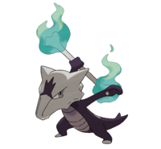
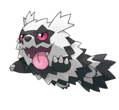
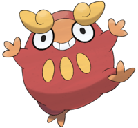
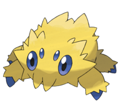
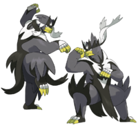
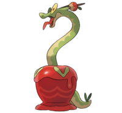

| 105 |
Marowak
(Forma Alola) |
 |
Fuego |
Fantasma |
1.0m |
34.0kg |
60 |
80 |
110 |
50 |
80 |
45 |
- Cuerpo Maldito
- Pararrayos
- Cabeza Roca (Habilidad Oculta)
|
- Cubone (Preevoloción)
|
- Agua
- Fantasma
- Roca
- Siniestro
- Tierra
|
Lo que golpea con su hueso queda prendido con su eterna llama maldita, que nunca se
apaga por mucha agua que se le eche encima.
|
| 252 |
Treecko |
 |
Planta |
0.5m |
5.0kg |
40 |
45 |
35 |
65 |
55 |
70 |
- Espesura
- Liviano (Habilidad Oculta)
|
- Groovyle(Nv16)
- Sceptile(Nv36)
|
- Bicho
- Fuego
- Hielo
- Veneno
- Volador
|
Treecko tiene unos ganchos pequeños en las plantas de los pies con los que puede escalar
superficies verticales. Este Pokémon ataca dando un golpetazo con la cola.
|
| 263 |
Zigzagoon (Forma Galar) |
 |
Siniestro |
Normal |
0.4m |
17.5kg |
38 |
30 |
41 |
30 |
41 |
60 |
- Recogida
- Gula
- Pies rápidos (Habilidad Oculta)
|
- Linoone(Nv20)
- Obstagoon(Nv35)
|
|
Corretea por doquier sin descanso. En cuanto ve a otro Pokémon, se lanza contra él para
provocarlo y buscar pelea.
|
| 280 |
Ralts |
 |
Psíquico |
Hada |
0.4m |
6.6kg |
28 |
25 |
25 |
45 |
35 |
40 |
- Sincronía
- Rastro
- Telepatía (Habilidad Oculta)
|
- Kirlia(Nv20)
- Gardevoir(Nv30)
- Gallade (Piedra alba + ♂)
|
- Acero
- Fantasma
- Veneno
|
Ralts percibe las sensaciones de la gente por los colmillos que tiene encima y detrás de
la cabeza. No es común que este Pokémon aparezca en público, pero cuando lo hace, se
acerca si ve buena disposición en la gente.
|
| 501 |
Oshawott |
 |
Agua |
0.5m |
5.9kg |
55 |
55 |
45 |
63 |
45 |
45 |
- Torrente
- Caparazón (Habilidad Oculta)
|
- Dewott(Nv17)
- Samurott(Nv36)
|
|
Ataca con la vieira de su ombligo. En cuanto para un ataque, pasa al contraataque sin
dilación.
|
| 554 |
Darumaka |
 |
Fuego |
0.6m |
37.5kg |
70 |
90 |
45 |
15 |
45 |
50 |
- Entusiasmo
- Fuerza Mental (Habilidad Oculta)
|
- Darmanitan (Nv 35)
|
|
Como sus excrementos están muy calientes, la gente de antaño se los metía en los
bolsillos para calentarse.
|
| 595 |
Joltik |
 |
Bicho |
Eléctrico |
0.1m |
0.6kg |
50 |
47 |
50 |
57 |
50 |
65 |
- Ojo compuesto
- Nerviosismo
- Enjambre (Habilidad Oculta)
|
- Galvatula(Nv36)
|
|
No puede generar electricidad por sí mismo, así que se encarama a Pokémon grandes y
absorbe su energía estática.
|
| 887 |
Dragapult |
 |
Dragón |
Fantasma |
3.0m |
50.0kg |
88 |
120 |
75 |
100 |
75 |
142 |
- Cuerpo puro
- Allanamiento
- Cuerpo Maldito (Habilidad Oculta)
|
- Dreepy(Preevolución)
- Drakloak(Preevolución)
|
- Dragón
- Fantasma
- Hada
- Hielo
- Siniestro
|
Vive en compañía de Dreepy, a los que hospeda en el interior de sus cuernos. Los dispara
a velocidad supersónica en combate.
|
| 892 |
Urshifu |
 |
Lucha |
- Agua(Estilo Fluido)
- Lucha(Estilo Brusco)
|
105kg |
1.9m |
100 |
130 |
100 |
63 |
60 |
97 |
|
- Kubfu(Preevolución)
|
|
-
Estilo Fluido: Se considera que su estilo de lucha, a veces intenso y a veces
comedido, se inspira en el fluir de la corriente de los ríos.
-
Estilo Brusco: Su estilo de lucha se basa en abatir a sus rivales de un solo golpe.
Se abalanza sobre ellos con su puño cincelado por el entrenamiento.
|
| 1019 |
Hydrapple |
 |
Planta |
Dragón |
1.8m |
93.0kg |
106 |
80 |
110 |
120 |
80 |
44 |
- Néctar Dulce
- Regeneración
- Viscosidad (Habilidad Oculta)
|
- Applin(Preevolución)
- Dipplin(Preevolución)
|
- Hielo
- Bicho
- Dragón
- Hada
- Veneno
- Volador
|
Se trata de siete seres llamados Viborappli que viven juntos en una manzana de caramelo.
El del centro es el líder del grupo.
|